For this assignment, you will write two programs. One of them will encrypt with the Advanced Encryption Standard (AES) and the other one will decrypt. AES is very widely used in encryption today, AES Wikipedia Page. We’ll be implementing the 128-bit version of the algorithm. It will use a 16-byte key and will encrypt and decrypt in blocks of 16 bytes.
You’ll be creating a program called encrypt. You can run
it as follows, giving the name of an file containing a 16-byte key
(key-01.txt), then the name of an input file to encrypt (plain-01.txt)
and then the name of a output file where it should write the encrypted
result (cipher-output.bin).
$ ./encrypt key-01.txt plain-01.txt cipher-output.binOur encryption program will work on text files or binary data files. We’re using a filename extension of .txt for text files and .bin for binary files, to make it easy for us to tell what type of data is in a particular file. The example above is using a key and a plaintext input that only contain legal ASCII character codes, so we can look at the contents of these files like any other text files:
$ cat key-01.txt
abcdefgh1234567
$ cat plain-01.txt
one fish
2 fishEven if the input files are text, the results of encryption will look like random garbage. Below, we’re using hexdump to show the contents of the encrypted output from above, in hexadecimal on the left, and using ASCII character on the right.
$ hexdump -C cipher-output.bin
00000000 93 89 d1 2e db e8 aa 7c 2b 6b 2f a7 43 29 84 6f |.......|+k/.C).o|
00000010AES is a symmetric encryption algorithm. This means that we need to
use the same key to decrypt as we used to encrypt. That’s what the
decrypt program will do. You should be able to run it as
follows to get it to decrypt the encrypted file (cipher-output.bin)
using the given key file (key-01.txt) and write the results to the
output file, plain-output.txt.
$ ./decrypt key-01.txt cipher-output.bin plain-output.txtAfter decrypting, we should get an output file that’s identical to
the plain-01.txt file we started with. We can use diff to
check this for us.
$ diff plain-output.txt plain-01.txt
With this assignment, we’re using the typical terminology for encryption. We use the term plaintext to describe an unencrypted file (even if it’s binary data and not really text). We say ciphertext when we’re talking about an encrypted file (which will almost certainly not look like text).
As with recent assignments, you’ll be developing this assignment
using git for revision control. You should be able to just unpack the
starter into the hw3 directory of your cloned repo to get started. See
the Getting Started section for instructions. For
the text files, you should still be able to view these with your text
editor or in the terminal. The binary files will probably look like
garbage in your editor. If you need to see what a binary file contains,
hexdump -C is a good way to have a look.
This assignment supports a number of our course objectives. See the Learning Outcomes section for a list.
You get to complete this assignment individually. If you’re unsure what’s permitted, you can have a look at the academic integrity guidelines in the course syllabus.
You should be able to complete this homework using material covered in the lecture slides up to lecture 12. In particular, you’ll need the material from lecture 10 on binary file I/O the lecture 12 material covering the bitwise operators. Please don’t go find other resources for implementing your solution. This will help you to practice using the C language and library features we’ve covered up to this point in the class.
All code submitted for this assignment should be from the starter or written by you this semester for this course. You are not permitted to use code that has been generated or obtained from sources other than course materials (class slides, the textbook, posted class examples), even if you modify this code before turning it in.
In the design section, you’ll see some instructions for how your implementation is expected to work. Be sure you follow these rules. It’s not enough to just turn in a working program; your program has to follow the design constraints we’ve asked you to follow. For this assignment, we’re mostly asking you to organize your code into a particular set of functions. The starter includes a couple of unit test programs to help you sneak up on a working solution. Following the design constraints will help make sure your solution works with the unit tests.
This section says what your program is supposed to be able to do, and what it should do when something goes wrong.
FR-1 : Given a 16-byte key and a plaintext input
file that’s a multiple of 16 bytes in size, the encrypt
program can encrypt the plaintext and write out a file containing the
ciphertext.
The encrypt program expects three command-line
arguments. The first is the name of an input file containing a 16-byte
key. The second argument is a plaintext input file containing data to
encrypt. The last argument is the name of an output file where the
program should write the encrypted result. For example, if you run
encrypt as follows, you’re telling it to use a key from a
file named key.bin, to encrypt the contents of a file named
plaintext.bin and to write the result to a file named
ciphertext.bin. The key and plaintext inputs could be
either text or binary data.
./encrypt key.bin plaintext.bin ciphertext.binIf you run the encrypt program with invalid command-line arguments (e.g., missing an argument or too many arguments), it should print the following usage message to standard error and terminate with an exit status of 1.
usage: encrypt <key-file> <input-file> <output-file>FR-2 : Given a 16-byte key and a ciphertext input
file, the decrypt program can decrypt the ciphertext and
write out a file containing the resulting plaintext.
The decrypt program expects similar command-line
arguments, a key, an input file and an output file. Of course, the
decrypt program is expected to read in ciphertext and write out
plaintext. If you run decrypt as follows, you’re telling it
to use a key from a file named key.bin, to decrypt the
contents of a file named ciphertext.bin and to write the
result to a file named plaintext.bin.
./decrypt key.bin ciphertext.bin plaintext.binIf you run the decrypt with invalid command-line
arguments, it should print the following usage message to standard error
and terminate with an exit status of 1.
usage: decrypt <key-file> <input-file> <output-file>For either the encrypt or decrypt programs, if the user gives a filename that the program can’t open, it should print the following line to standard error and terminate with an exit status of 1. Here, filename is the name of the file that can’t be opened. The program should try to open the given filenames in the same order they are given on the command-line, so, if two or more filenames are bad, the program just needs to report an error for the first one.
Can't open file: filenameThe key file may contain any sequence of bytes, but it must always be exactly 16 bytes. If the user gives a key file that’s not the correct length, either of the programs should print the following line to standard error and terminate with an exit status of 1. Here, key-filename is the name of the key file given by the user on the command line.
Bad key file: key-filenamePlaintext input files must be a multiple of sixteen bytes in length. If the user runs encrypt with a plaintext file that isn’t a multiple of 16 bytes, the program should print the following line to standard error and terminate with an exit status of 1. Here, filename is the input filename given by the user:
Bad plaintext file length: filenameLikewise, if the user runs decrypt with a ciphertext input file
that’s not the right length, decrypt should print the
following line to standard error and terminate with an exit status of
1.
Bad ciphertext file length: filenameThen encrypt and decrypt programs are expected to support a maximum
plaintext file size of one megabyte (1048576 bytes). If
encrypt is run with a plaintext input that’s larger than
this, or if decrypt is run with an input file that will be
larger than this after it is decrypted, they should print the following
message to standard error and terminate with an exit status of 1. Here,
filename is the name of the plaintext or ciphertext input file
given on the command line.
File filename too largeThis assignment has an extra credit opportunity. You can earn up to 8 points of extra credit by adding support for padding the plaintext input. This will let us handle plaintext files that aren’t a multiple of 16 bytes in length. After decrypting, this padding will need to be removed to get an output file that matches the input exactly.
For padding, we will use a technique called PKCS#5. A plaintext input will always have between 1 and 16 bytes added to the end before it is encrypted, whatever number of bytes will bring the size up to a multiple of 16. The value stored in the padding bytes will be the same as the number of padding bytes added. For example, the following shows the how a 15-byte plaintext input would be handled. We would add one byte of padding, with a value of 0x01 in that byte.
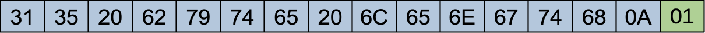
The following example shows what will happen to a 23-byte input. It would need 9 more bytes of padding to bring the size up to 32 bytes. All these padding bytes would have a value of 0x09.
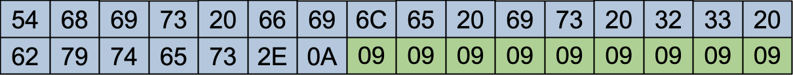
If the plaintext is already a multiple of 16 bytes in length, it will still get padding at the end. That way, the decrypt program will know there is always some padding to remove. The following example shows a 16 byte input. It gets 16 more bytes of padding, each containing a value of 0x10.
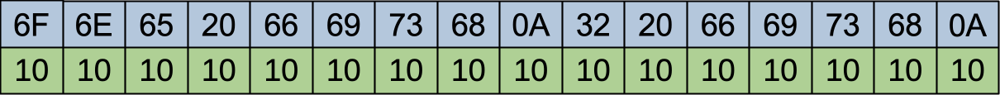
After decrypting, the padding at the end must be removed, to recover an exact copy of the original plaintext input. The PKCS#5 technique makes this easy. The last byte of the decrypted plaintext will always tell you how many bytes of padding were added. That’s how many bytes need to be removed.
With padding, the encrypted file size will always be larger than the unencrypted file. The file size limit described above is limit on the size of the plaintext file. You could have a ciphertext file that was a little bit larger than this, as long as it decrypted to a file that was no larger than a megabyte.
To enable padding, we’ll add support for a -p option at
the start of the command line arguments, right before the name of the
input file containing the key. This option will tell the
encrypt program to automatically add padding to the
plaintext before encrypting it. It will tell decrypt to
remove the padding before writing out the plaintext result. Without this
option, the program should not perform any padding or padding removal.
There are some examples off using this option below, under
Extra Credit Tests.
If you support the -p option, don’t change the usage
message reported when the command-line arguments are invalid; just leave
as shown above in the “Encrypt and Decrypt Programs” section. That way,
your program will still pass any tests that cause the program to print
the usage message.
AES uses an 8-bit finite field (also called a Galois field) for many of its operations. This lets it compute with byte values using operations that work kind of like the four standard arithmetic operations, addition, subtraction, multiplication and division. However, instead of performing these operations normally, a Galois field defines them so that they never overflow and (except in special cases like multiplying by zero) operations are invertible. This kind of arithmetic is common in encryption operations or error-correcting codes. For AES, this will let us encrypt the plaintext input by applying a sequence of operations, then we can recover the plaintext from the ciphertext by applying the inverse of these operations.
The arithmetic operations in our Galois field don’t behave like normal, integer addition, subtraction, multiplication and division. They have a lot of the same algebraic properties, but you wouldn’t want to, say, balance your checkbook using this type of math.
In the 8-bit Galois field used by AES, addition is performed by the exclusive or operation. We’ll write this addition operation as ⊕. That’s a common notation for exclusive or. The following figure shows the addition of 0xC2 and 0xBE. The result is 0x7C.
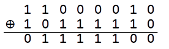
For the field used by AES, subtraction is also defined as the exclusive or operation. So, in this field, there’s no difference between addition and subtraction. We’ll use the same symbol, ⊕, to represent subtraction.
This means that every value is its own additive inverse. If we add two values x ⊕ y, adding y again will give us back our original value, x (since x ⊕ y ⊕ y = x). This will come in handy during decryption. For an add operation, we can just repeat the same operation to un-do it.
Multiplication in the Galois field used by AES is a more complicated than addition and subtraction. It’s implemented in two phases. The first phase works a lot like regular, integer multiplication. We’ll describe this using an example problem, multiplying values 0x3B × 0x57. We’ll call the first operand of the multiply a and the second operand b.
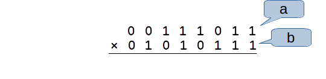
If you think back to how you learned multiplication in elementary school, you probably thought of this as a process of multiplying a by each of the digits of b, shifting it to the left for each digit. We’ll do the same kind of thing. It will be simpler because the digits of b are either zero or one.
The low-order bit of b is 1, so we add a copy of a shifted by zero bits. This is like adding a copy of a times 1.
The next bit of b is also 1, so we add a copy of a shifted one bit to the left. This is the same kind of thing we do when we’re multiplying in base 10. This bit of b is in the two’s place, so sliding all the bits of a to the left makes them all worth twice as much. This is like adding a copy of a times 2.
The next bit of b is another 1, so we add in another copy of a, this time shifted two bits to the left. This is like adding in a copy of a times 4.
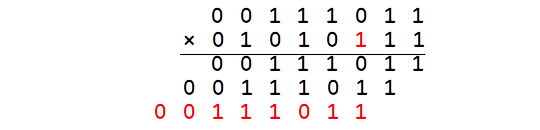
The next bit of b is a zero, so we don’t add in a copy of a for this bit. This is like adding in a copy of a times zero. We could just skip over any bit of b that’s zero, and just pay attention to the bits with a value of 1.
The next non-zero bit of b is in the sixteens place, so we add in a copy of a shifted left by four bits. This is like adding in a times sixteen.
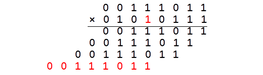
The next non-zero bit of b is in the sixty-fours place, so we add in a copy of a shifted left by six bits. This is like adding in a times sixty-four.
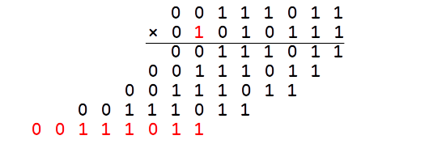
When we add together all these multiples of a, we use the exclusive or operation, rather than normal addition. That gives us a value of zero or one for each bit, and we don’t need to worry about carrying from one bit to the next. To compute the exclusive or of more than two operands, you can just combine the arguments with exclusive or in any order, like you would with the usual plus operator. Exclusive or is associative and commutative, so it doesn’t matter what order you combine the operands; you’ll get the same result.
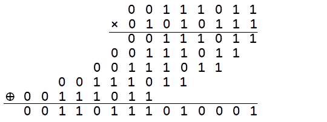
Now, we have a result, but it doesn’t fit in 8 bits. We want the multiply operation to give us an 8-bit result. We could say we want the field to be closed under multiply. That’s what the second phase of the multiply operation is for. It lets us remove the high-order ones to get the result down to just 8 bits.
We’ll remove the extra 1 bits by exclusive-or-ing with shifted copies of the the value 0x11B. We’ll call this value the reducer. The result has a 1 in bit 11 (counting from bit zero on the right). If we shift the reducer to the left by 3 bits, the picture below shows what we get. The high-order 1 from the reducer is in the same position as the high-order 1 in the result.
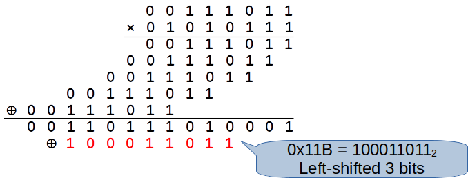
If we exclusive or this shifted copy of the reducer, it will cancel out the one in bit 11, also changing the values of some of the lower order bits. Our result still doesn’t fit in 8 bits, but, but we can repeat the process until we get it down to an 8-bit result.
If we shift the reducer left by 2 bits, then its high-order 1 will line up with the remaining high-order 1 in bit 10.
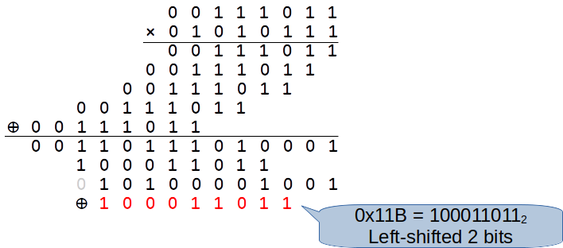
Another exclusive or operation removes the one in bit 10. Then, we just have an extra 1 in bit 8. If we take one more copy of the reducer, shifted by zero bits, its high-order 1 lines up with the remaining 1 in bit 8.
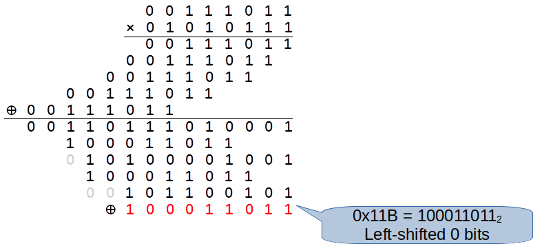
After an exclusive or, we’re down to just an 8-bit result. Multiplying 0x3B and 0x57 gives a result of 0x7E in our 8-bit Galois field.
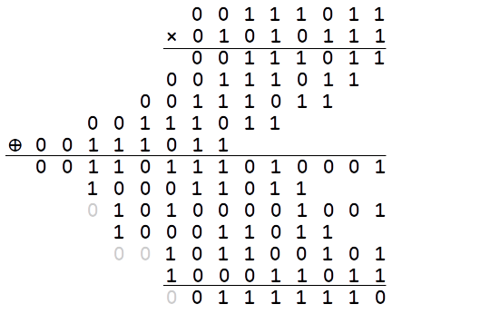
This is how all multiplications will be performed in the field. The first phase will compute a 16-bit result, using an operation much like binary multiplication (but with exclusive or rather than normal addition). Then, a second phase will reduce the result to 8 bits by performing exclusive or with shifted copies of 0x11B to cancel out any high-order one bits that won’t fit in an 8-bit result. Of course, in the second phase, you want to work from the left toward the right. Otherwise, an attempt to clear a bit might change bits you’ve already tried to clear.
Be sure to implement the multiply operation the way it’s described here. You may be able to find implementations of this operation, but don’t base your code on these other implementation. Coding this operation the way it’s described here should give you a better chance to practice working with bitwise operations, and coding it by adapting some other implementation way may look like an academic integrity violation.
We don’t actually need division for implementing AES. If you wanted to implement it, it’s fairly easy once you have multiplication implemented. In the field, every value except zero has a multiplicative inverse. Instead of implementing a separate operation for divide, you can compute the multiplicative inverse of every value in the field, then just multiply by the inverse of some value rather than dividing by that value.
The 8-bit values and operations we’re using for our Galois field are secretly based on polynomials defined in the integers mod 2. The addition and subtraction operations are essentially adding or subtracting coefficients of two polynomials. The multiply operation is like multiplying two polynomials and then performing some synthetic division. You don’t have to understand this connection to implement and use the field, but it does help to explain where our peculiar definition of add, subtract and multiply come from.
To encrypt or decrypt a file, AES processes the file as a series of 16-byte blocks. It encrypts (or decrypts) a block containing the first 16 bytes of the file, then moves on and processes the next 16 bytes as a separate block. This is why our program expects plaintext and ciphertext input files that are a multiple of 16 bytes in length.
In cryptographic terms, this is called ECB (Electronic Codebook) mode. It’s simple, but it has some disadvantages. For a real encryption application, we would probably not want every block to be independently encrypted and decrypted. This can leave us vulnerable to some types of attack. In Operating Systems class, we’ll talk about some better techniques for encrypting a multi-block file or message.
The following figure shows the steps in encrypting a single 16-byte block. The 16 values up at the top of the figure represent the original 16 bytes of the block.
The steps of the encryption use 11 different key values called subkeys. The first encryption step is to add the first of these subkeys to the block using an operation called addSubkey. Then, the block is run through a series of 10 rounds of computation. The result form the last round is the encrypted block. The rounds all perform the same sequence of actions in the same order, except the last one which omits a step. That’s why it’s in a different color in the figure.
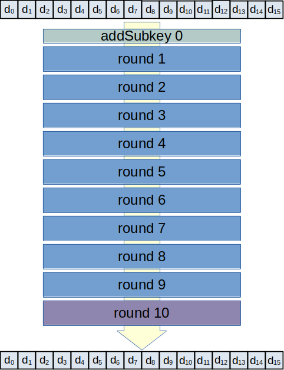
The sections below explain how to do the various steps in this process, including generating the subkeys, adding a subkey to the block and performing a round of encryption.
For decryption, we just have to perform the encryption steps in reverse order, applying inverse operations for each step. For example, encryption starts by adding subkey 0. Then, it performs round 1. Decryption would start with round 10, performing the inverses for each of the round’s steps in reverse order.
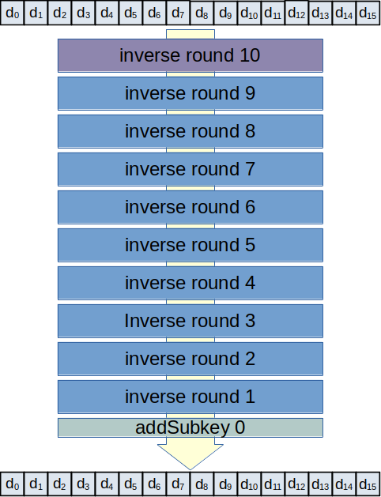
Before encrypting a block, the AES algorithm uses the 16-byte key to generate a sequence of 11 different keys, called subkeys. Each subkey is also 16 bytes in length. The first subkey is just a copy of the original, 16-byte key. Each of the remaining 10 subkeys is generated using a procedure shown in the following figure.
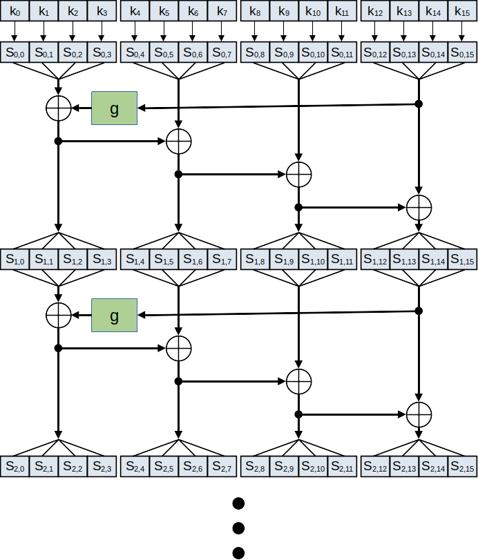
In this figure, k0 .. k15 represents the bytes of the original key. The notation Si,j represents byte number j of the i-th subkey. Up near the top of the figure, you can see that the first subkey is just copied from the original key. The remaining subkeys are made by combining bytes from the previous subkey using the exclusive or operation and a function named g. The ⊕ symbols in the figure represent the exclusive or operation, and the green box labeled g represents the g function.
Subkey generation works with bytes of the key four at a time. These four-byte groups are called words in the algorithm. The figure shows what happens to each word during subkey generation. For example, the last word of the subkey (bytes 12 .. 15) is given as input to the g function (described below). The output of the g function is combined with the first word of the subkey (bytes 0 .. 3) using exclusive or. The result becomes the first four bytes of the next subkey. It is also combined with word 1 from the subkey (bytes 4 .. 7) to get word 1 of the next subkey. As shown in the figure, similar operations are performed to generate words 2 and 3 of the next subkey.
To compute the exclusive or of two words, you just compute the exclusive or of corresponding bytes of the words. For example, if you had a four-byte word a0, a1, a2, a3 and another four-byte word b0, b1, b2, b3, then the exclusive or of these two words would be a0 ⊕ b0, a1 ⊕ b1, a2 ⊕ b2, a3 ⊕ b3.
We don’t have to implement inverse operations for subkey generation. Both encryption and decryption use exactly the same subkeys. Decryption just uses the subkeys in reverse order, from S10 to S0.
The following figure shows the definition of the g function used in subkey generation. The little circles with the S inside show a substitution function being applied to each byte of the input word. This function is defined below. The four bytes are rearranged. For example, after substitution function is applied to the first byte of the word, the result is stored in the last byte of the word.
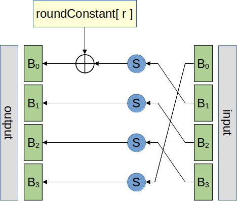
The value of byte 1 gets special treatment. After being transformed via the substitution function, a constant value called the round constant is added using exclusive or. The following table shows the round constant used for each round.
| Round | Constant |
|---|---|
| 1 | 0x01 |
| 2 | 0x02 |
| 3 | 0x04 |
| 4 | 0x08 |
| 5 | 0x10 |
| 5 | 0x20 |
| 7 | 0x40 |
| 8 | 0x80 |
| 9 | 0x1b |
| 10 | 0x36 |
The g Function is already implemented for you in the starter.
The AES algorithm uses a substitution operation in a few places. This operation simply replaces a given byte value with a different value according to predefined rule. Each value is replaced with a different value, so the substitution function is invertible. For example, the AES substitution function replaces the value 0x01 with the value 0x7C. To reverse this, the inverse substitution replaces the value 0x7C with the value 0x01.
The substitution function is sometimes called an S-box. In the figures, it is written as a little circle with the letter S in it. We’re not giving a complete definition here for the replacement rule used by the substitution function. It’s already implemented for you in the starter.
The following figure can help you check the operation of your g function and the first few subkeys generated. The little bubbles show what values you should expect at various points in the procedure. This example matches the test for generateSubkeys() from the unit test driver provided with the assignment.
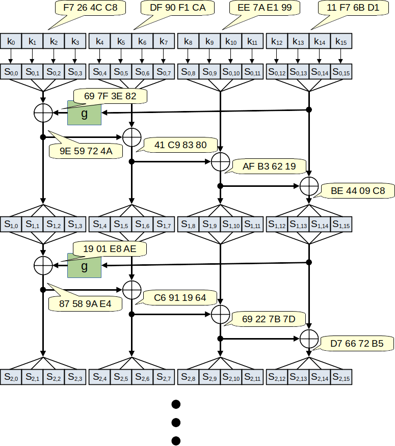
The addSubkey operation combines the block being encrypted with one of the subkeys. This operation is done at the start of block encryption, and an addSubkey is also done as part of each of the 10 rounds.
The addSubkey operation is simple. It uses the add operation from the Galois field to add each byte of the subkey to the corresponding byte from the current block.
Since addSubkey uses exclusive or, it serves as its own inverse. Decryption doesn’t require a separate operation for subtracting a subkey from the current block. Adding the same subkey again will cancel out a previous addition of the subkey.
The following figure shows what’s done inside each round. Each round runs every byte of the block through the same substitution function used in subkey generation. Then, it arranges the bytes into a square, 4 × 4 array and performs two operations on the square, shiftRows then mixColumns. It puts the resulting bytes back into a one-dimensional arrangement and then performs an addSubkey with the next subkey. The first subkey is added to the block before the first round, then subkeys 1 through 10 are added as part of a round computation.
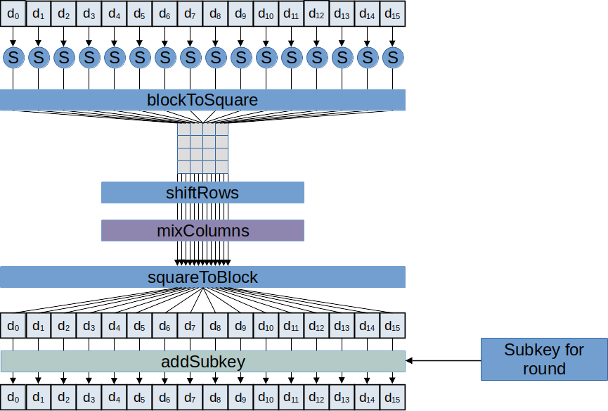
The round computations are mostly the same, but the last round is a little bit different. It doesn’t perform the mixColumns operation.
The shiftRows and mixColumns operations depend on the bytes of the block being arranged as a little 4 × 4 square. The blockToSquare operation illustrated below copies the bytes from the one-dimensional arrangement to a two-dimensional arrangement in column-major order.
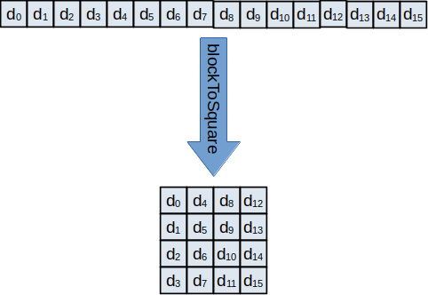
After arranging the block into a little 4 × 4 square, the shiftRows operation moves bytes within each row. Values in the top row don’t move. Values in row 1 move left by one column, wrapping around from the first column to the last one. Values in row two move by two columns and values in row 3 move by three columns.
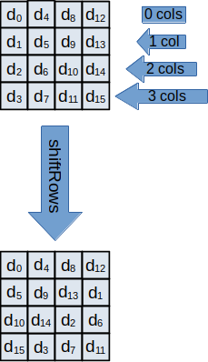
For decryption, the rows need to be shifted the other way, reversing the affects of the shifts done during encryption.
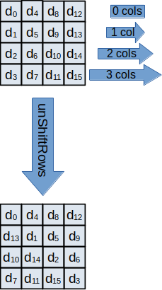
The mixColumns operation combines all the values in a column, producing four new values for the column. The values in each column are used as a vector which is (left-) multiplied by the matrix shown in the following figure. The resulting vector replaces the the column. The matrix-vector multiplication is done using multiply and add operations from the Galois field.
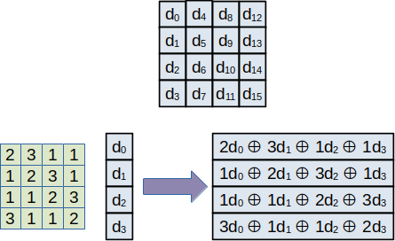
If you don’t remember how to do matrix-vector multiplication, the figure shows the result you should get for the left-most column. You’ll just need to perform the same operation for all four columns.
The matrix used in mixColumns is invertible. To invert this step, decryption just needs to multiply by the inverse matrix. The following figure shows what this matrix looks like (in hexadecimal) and what you would get if you multiplied this matrix by the leftmost column.
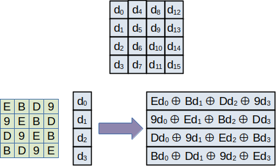
The squareToBlock function is the inverse of blockToSquare. It puts the values of a block back in a one-dimensional arrangement of 16 bytes.
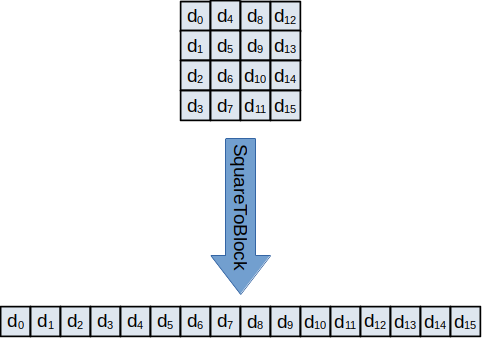
The following figure shows examples of the intermediate values you should get during a round of encryption. You can use this to help check and debug your implementation of the round. This should match round 1 of the test for encryptBlock() in the unit test program provided with the starter. Remember that the block has already gone through one addSubkey operation before the start of this round.
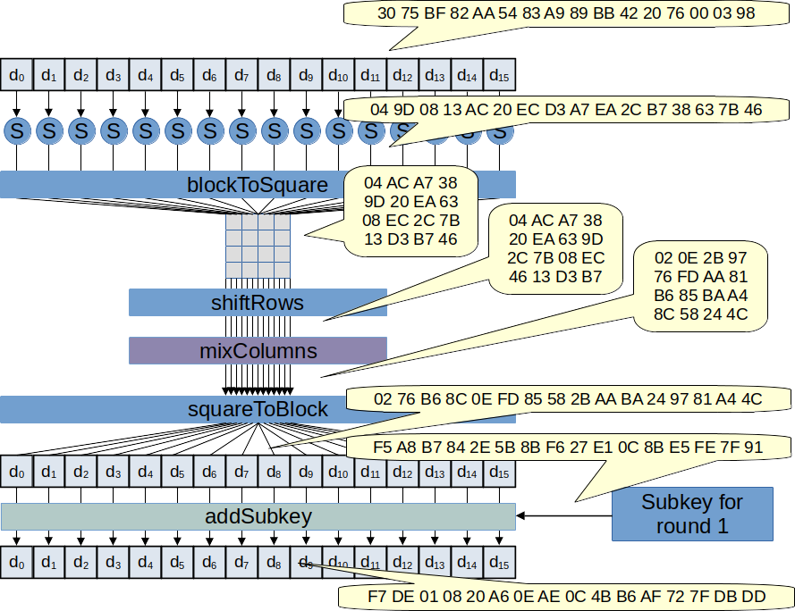
The following shows round 2 for the same call to encryptBlock().
You won’t need any sophisticated data structures to implement AES. We’ll just need one- and two-dimensional arrays, along with functions to implement each of the basic operations used by AES.
Your source code will consist of five components, three of them with header files.
field.c / field.h
This component implements support for basic arithmetic operations in an
8-bit (a byte) Galois field. These operations are used internally by AES
for many steps in the encryption and decryption process.
io.c / io.h
This component is responsible for reading input files and writing output
files when the encrypt or decrypt program is done.
aesUtil.c / aesUtil.h
This component contains a few constants, global variables and functions
used by AES. Splitting this into a separate component lets us provide
some parts of the implementation for you. We’ve also tried to isolate
most of the magic numbers needed by AES to this component, so you should
be able to avoid magic numbers in your aes.c file.
aes.c / aes.h
This is where the AES algorithms for encryption and decryption are
implemented. It’s broken up into several small functions for the various
steps, so these can be tested and debugged independently.
encrypt.c
This is the main component for the encrypt program. It contains the main
function and uses the other components to read the input file, to
perform AES encryption and to write out the ciphertext output.
decrypt.c
This is the main component for the decrypt program. It contains the main
function and uses the other components to read the input file, to
perform AES decryption and to write out the plaintext output.
The following figure shows the dependencies among the components. The
field component doesn’t depend on anything else. The aes
and io components can use field (io probably
just needs the byte type), and the two top-level components can use code
from any of the other three.
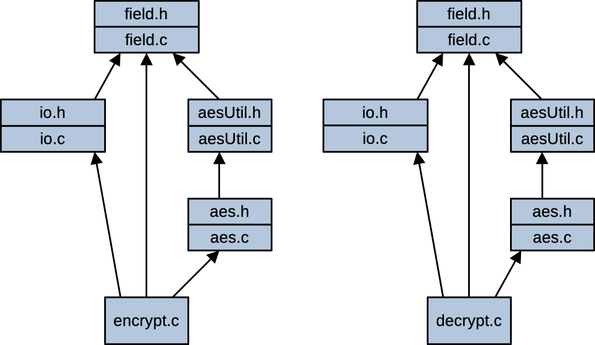
We use a type named byte to represent the contents of a file and elements of our finite field. The field component defines a type name for byte. It’s just an alias for the standard, unsigned char, type.
There are a few operations in AES that are defined in terms of a 4-byte word. We don’t really need a separate type for this, but there’s a WORD_SIZE constant for the few places when we need to talk about a group of four bytes from the key. The WORD_SIZE constant isn’t the same as the width and height constants for the square arrangement of a block. These constants all have a value of 4, but they represent different ideas, so there are different named constants for them.
The AES algorithm encrypts and decrypts the input one sixteen-byte block at a time. In our implementation, this will be represented as a one-dimensional array of bytes. For the algorithm steps where we’re interpreting the input as a square, we’ll use a two-dimensional, 4 × 4 array of bytes. The starter already includes some named constants for the sizes of these arrays.
As part of your implementation, you will need to define and use certain functions we’re expecting. We’re providing a couple of unit test drivers (described below) that will help you make sure some of the tricky functions are doing the right thing.
As usual, if you add some of your own functions, be sure to mark them as static if they are for internal use only by their component. If they’re intended for use by code outside the component, you can leave them non-static and give them a prototype (and documentation) in the header.
The field component is expected to have at least the
following three functions. If you’d like to add a fieldDiv() operation,
you can have a complete 8-bit finite field implementation, but we don’t
need it for our implementation of AES.
byte fieldAdd( byte a, byte b )
This function performs the addition operation in the 8-bit Galois field
used by AES. It adds a and b and returns the result.
byte fieldSub( byte a, byte b )
This function performs the subtraction operation in the 8-bit Galois
field used by AES. It subtracts b from a and returns the
result.
byte fieldMul( byte a, byte b )
This function performs the multiplication operation in the 8-bit Galois
field used by AES. It multiplies a and b and returns the
result.
The io component is expected to have at least the
following two functions:
int readBinaryFile( char const *filename, int capacity, byte data[ capacity ] )
This function reads the contents of the binary file with the given name.
It returns the total size of the file and stores the contents of the
file in the given data array. The capacity parameter give the size of
the data array. If the given file can’t be opened or if it’s larger than
the data array capacity, the function should print the appropriate error
message and terminate the program.
void writeBinaryFile( char const *filename, int size, byte data[ size ] )
This function writes the contents of the given data array (in binary) to
the file with the given name. The size parameter says how many bytes are
contained in the data array. If the given file can’t be opened for
writing, the function should print the appropriate error message and
terminate the program.
The aesUtil component provides functions, and data and
constant definitions to simplify the implementation of the
aes component. It’s already implemented for you in the
starter code. It contains the following functions and global variables
for you to use in your code.
const byte forwardMixMatrix[ BLOCK_ROWS ][ BLOCK_COLS ];
This 2D array is a copy of the matrix needed to perform the mix columns
operation.
const byte inverseMixMatrix[ BLOCK_ROWS ][ BLOCK_COLS ];
This 2D array is a copy of the matrix needed to perform the inverse of
the mix mix columns operation.
static byte substBox( byte v )
This function implements the substitution box function.
static byte invSubstBox( byte v )
This function implements the inverse substitution box function.
void gFunction( byte dest[ WORD_SIZE ], byte const src[ WORD_SIZE ], int r )
This function computes the g function used in generating the subkeys
from the original, 16-byte key. It takes a 4-byte input via the src
parameter and returns a 4-byte result via the dest parameter. The value,
r, gives the round number, between 1 and 10 (inclusive).
The aes component needs to have the following functions.
Normally, most of these would be static; the last two functions are
really the only ones needed in order to encrypt and decrypt with AES.
However, in our implementation, they should all be non-static, with a
prototype and comment in the header. This makes them visible to the unit
test program, so we can check the internal operation of various steps in
the AES algorithm.
void generateSubkeys( byte subkey[ ROUNDS + 1 ][ BLOCK_SIZE ], byte const key[ BLOCK_SIZE ] )
This function fills in the subkey array with subkeys for each round of
AES, computed from the given key.
void addSubkey( byte data[ BLOCK_SIZE ], byte const key[ BLOCK_SIZE ] )
This function performs the addSubkey operation, adding the given subkey
(key) to the given data array.
void blockToSquare( byte square[ BLOCK_ROWS ][ BLOCK_COLS ], byte const data[ BLOCK_SIZE ] )
This function rearranges a block of 16 data values from the
one-dimensional arrangement to the 4 × 4 arrangement.
void squareToBlock( byte data[ BLOCK_SIZE ], byte const square[ BLOCK_ROWS ][ BLOCK_COLS ] )
This function rearranges a 4 × 4 arrangement of data values, returning
them as a one-dimensional array of 16 values.
void shiftRows( byte square[ BLOCK_ROWS ][ BLOCK_COLS ] )
This function performs the shiftRows operation on the given 4 × 4 square
of values.
void unShiftRows( byte square[ BLOCK_ROWS ][ BLOCK_COLS ] )
This function performs the inverse shiftRows operation on the given 4 ×
4 square of values.
void mixColumns( byte square[ BLOCK_ROWS ][ BLOCK_COLS ] )
This function performs the mixColumns operation on the given 4 × 4
square of values, multiplying each column by the matrix shown in the
requirements section.
void unMixColumns( byte square[ BLOCK_ROWS ][ BLOCK_COLS ] )
This function performs the inverse of the mixColumns operation on the
given 4 × 4 square of values, multiplying each column by the inverse of
the mixColumns matrix shown in the requirements section.
void encryptBlock( byte data[ BLOCK_SIZE ], byte key[ BLOCK_SIZE ] )
This function encrypts a 16-byte block of data using the given key. It
generates the 11 subkeys from key, adds the first subkey, then performs
the 10 rounds of operations needed to encrypt the block.
void decryptBlock( byte data[ BLOCK_SIZE ], byte key[ BLOCK_SIZE ] )
This function decrypts a 16-byte block of data using the given key. It
generates the 11 subkeys from key, then performs the 10 rounds of
inverse operations (and then an addSubkey) to decrypt the
block.
You should avoid using magic numbers in your code. Instead, look for good opportunities to use named constants to help explain what a particular value is for or to isolate constant values so they don’t need to be duplicated in the code.
The AES encryption and decryption algorithms use a lot of specific
numbers. Most of these have been isolated to constants, global variables
and functions defined in the aesUtil component. Using
these, you should be able to avoid magic numbers elsewhere in your
code.
You won’t be penalized for literal values in the aesUtil
component provided with the starter. We won’t consider them magic
numbers (even though that’s sort of what they are). However, for the new
code you add, you should follow our normal practice of using meaningful
named constants to help make your code easier to understand and modify.
A few useful constants are provided for you in the starter.
You get to implement your own Makefile for this assignment (called
Makefile with a capital ‘M’, no filename extension). Its
default target should build both the encrypt and decrypt programs. You
can do this by adding the following rule as the first rule in the
Makefile. If you run make without specifying a target, this rule should
tell it to build both the encrypt and decrypt targets.
all: encrypt decryptIn your Makefile, be sure to use our standard gcc options,
-Wall, -std=c99 and -g. As usual,
your Makefile should correctly describe the dependencies for your source
files, so targets can be rebuilt selectively, based on which files have
changed since the last build. It should build objects for each
implementation file individually, then link them into a working
executable. It should also have a clean rule, to let the user discard
executables, object files and any other temporary files that might be
created during testing.
Your Makefile isn’t required to build the two unit test programs, fieldTest and aesTest. It’s fine to add rules to build these, if you want. Otherwise, you can just enter gcc commands to build these programs when you want to run them. That’s what the system test program does; it includes a few short gcc commands to build each of the unit tests before trying them out.
The starter includes a system test script and unit tests for two of the components. You can use the unit tests to help you make sure individual parts of your implementation are working. Then, as you start to complete the assignment, you can use the system test script to build and run the encrypt and decrypt programs against provided test inputs.
This assignment comes with test two driver programs for testing
individual functions in field.c and aes.c.
They’re named fieldTest.c and aesTest.c.
If you look inside each of these files, you can see they use functions from the two components we’re unit testing. They make one or more calls to these functions, then use a preprocessor macro to check the results and make sure they behaved correctly. This macro checks a condition to see if the test works, and it automatically reports an error message giving the line of code where each test failed. We’ll learn how to write macros like this in Lecture 18. This one works kind of like an assert(), but it lets the program continue running even after a failed test.
Of course, when you start writing your code, you won’t yet have all the functions the unit tests are trying to run. If the test programs try to call functions you haven’t implemented yet, they won’t even build successfully. To let you enable parts of each test driver gradually, as you implement things, we’ll use the preprocessor.
Up near the top of main() in each test driver, you’ll
see a line that says #ifdef DISABLE_TESTS. The matching
#endif is down near the bottom of main().
You’ll use this pair of preprocessor directives to disable blocks of
tests until you’ve implemented the functions they try to test. If you
implement your functions in the same order as they are tested, then
after you implement a new function, you can move the
#ifdef DISABLE_TESTS directive down past the block of test
code for that function. Then you can re-compile the test driver and try
it out with your new code. Once you’ve moved the
#ifdef DISABLE_TESTS past the last block of test code,
you’ve enabled all the tests.
At the bottom of each of the test drivers, it checks to see whether all the tests are enabled. if your implementation passes all the tests and they’re all enabled, the test program exits successfully. Otherwise, it terminates with an unsuccessful exit status.
To build and run the unit tests for the field component, you should be able to enter the following commands:
gcc -Wall -std=c99 -g fieldTest.c field.c -o fieldTest
./fieldTestSimilar commands will let you build and run the unit tests for the
aes.c component.
gcc -Wall -std=c99 -g aesTest.c aes.c aesUtil.c field.c -o aesTest
./aesTestThe starter includes a shell script for running system tests,
stest.sh It automatically builds and runs the unit tests
and then runs your completed programs against some test cases. When we
grade your programs, we’ll test them with this script, along with a
couple of extended unit tests and a few other system tests we’re not
providing with the assignment. To run the automated system test script,
you should be able to enter the following:
$ chmod +x stest.sh # probably won't need this if your files are in NCSU drive
$ ./stest.shEach time the system test script runs your program, it reports how it’s running it and how it’s checking the program’s results. You can use this output to run individual tests yourself. This can help you to take a closer look at failed tests to get a better idea of what’s going wrong.
As you’re debugging your finite field and AES functions, you may want
to look at values in binary or hexadecimal. The print function in gdb
offers flags to help with this. If you put /t between the
print command and the expression you want to print, it will print the
result in binary. Or, you can use /x to print in
hexadecimal.
When it terminates successfully, your program is expected to close any files it opens. When your programs have to exit unsuccessfully, they aren’t expected close all the files they’ve opened. That should make error-handling simpler. If you encounter an error in a subroutine, you can print an error message and exit right there, in the subroutine. You don’t have to return back to the caller and close all your open files.
The following list describes our test inputs and how they are used by the automated test script. Most of the test files are used to test successful behavior of both the encrypt and decrypt programs. The encrypt program is expected to create the right ciphertext output given a plaintext input, and the decrypt program is expected to give the same plaintext output given the corresponding ciphertext input. A few test inputs are used to test error-handling behavior of just one program.
key-01.txt, plain-01.txt and cipher-01.bin : The plaintext input and key are both 16-byte text files. These files are used to test encrypt and decrypt. The encrypt program should produce (from key-01.txt and plain-01.txt) an output file matching cipher-01.bin and the decrypt program should produce (from key-01.txt and cipher-01.bin) an output file matching plain-01.txt.
key-02.txt, plain-02.bin and cipher-02.bin : The plaintext input is a binary (some non-ASCII byte values) file containing, among other things, a byte value of zero and a byte value of 0xFF. Like test case 1, these files are used to test encrypt and decrypt.
key-03.bin, plain-03.bin and cipher-03.bin : The plaintext input and key are both binary (some non-ASCII byte values). The plaintext input is 32-bytes long, two AES blocks. These files are used to test encrypt and decrypt.
key-04.bin, plain-04.bin and cipher-04.bin : The plaintext input and key are both binary. The plaintext input is 64-bytes long, four AES blocks. These files are used to test encrypt and decrypt; they are a standard AES test cases.
key-05.txt, plain-05.txt and cipher-05.bin : The plaintext input and key are both text. The plaintext input is 256-bytes long, and these files are used to test encrypt and decrypt.
key-06.bin, plain-06.bin and cipher-06.bin : The plaintext input and key are both binary. The plaintext input is 2048-bytes long, and these files are used to test encrypt and decrypt.
key-07.bin and plain-07.txt : This is an error test case for encrypt. The key isn’t 16 bytes in length.
key-08.bin: This is an error test case for encrypt. It has bad command-line arguments.
key-09.txt and plain-09.txt: This is an error test case for encrypt. The input file is larger than the maximum supported file size.
key-10.bin: This is an error test case for decrypt. The ciphertext input file doesn’t exist.
The starter includes seven files to help you test your code, if you do the extra credit part of the assignment. There are three plaintext inputs, three ciphertext files and one key file used for all the inputs.
The first extra credit test uses a plaintext file that’s 15 bytes in size. It should get a one byte of padding at the end (with the value 0x01) to bring the size up to 16 bytes before encrypting. After decrypting, this one byte of padding should be removed to get a copy of the original plaintext input. If you did the extra credit, you should be able to try out your encrypt program on this test case using commands like the following.
$ ./encrypt -p key-ec.txt plain-ec-01.txt output.bin
$ diff output.bin cipher-ec-01.bin Then, you can make sure your decrypt program successfully removes the padding to give back a plaintext file that matches the input exactly:
$ ./decrypt -p key-ec.txt cipher-ec-01.bin output.txt
$ diff output.txt plain-ec-01.txt The second pair of extra credit test inputs has a plaintext input that’s 197 bytes long. As padding, it should get 11 bytes at the end, each with a copy of the value 0x0B. You can try encrypting then decrypting this input using commands like the following:
$ ./encrypt -p key-ec.txt plain-ec-02.txt output.bin
$ diff output.bin cipher-ec-02.bin
$ ./decrypt -p key-ec.txt cipher-ec-02.bin output.txt
$ diff output.txt plain-ec-02.txt The last pair of extra credit test files has a plaintext input that’s
192 bytes in size. This is a multiple of 16, but, with the
-p option, it will still get 16 bytes of padding at the
end, each byte with a value of 0x10. You can try out this
test with commands like:
$ ./encrypt -p key-ec.txt plain-ec-03.txt output.bin
$ diff output.bin cipher-ec-03.bin
$ ./decrypt -p key-ec.txt cipher-ec-03.bin output.txt
$ diff output.txt plain-ec-03.txt The grade for your program will depend mostly on how well it functions. This time, we’ll be looking at behavior of your code on the provided test drivers (maybe with some additional tests) and your success handling test inputs and producing the right output or error message. We’ll also expect your code to compile cleanly, to follow the style guide and to follow the design given in this assignment.
To get started on this assignment, you’ll need to clone your CSC 230 repo and unpack the given starter into the hw3 directory of your repo. You’ll submit by committing files to your repo and pushing the changes back up to your repo at github.com.
You should have already cloned your assigned NCSU github repo when you were working on homework 1. If you haven’t already done this, go back to the assignment for homework 1 and follow the instructions for for cloning your repo.
You will need to copy and unpack the homework 3 starter. We’re providing this file as a compressed tar archive, starter3.tgz. It’s linked from the course Moodle page, right under the description for homework 3. You can get a copy of the starter by downloading it from the course Moodle page, or you can follow the instructions below to unpack it directly from our shared copy on the EOS Linux machines.
If you downloaded a copy of the starter from Moodle, temporarily copy it to the hw3 directory of your cloned repo. Then, you should be able to unpack it with the following command:
$ tar xzvpf starter3.tgzOnce you start working on the assignment, be sure you don’t accidentally commit the starter to your repo. After you’ve successfully unpacked it, you may want to delete the starter from your hw3 directory, or move it out of your repo.
$ rm starter3.tgzInstead of downloading the start from this web page, if you’re
working on one of the EOS Linux machines, you can unpack it from a
shared copy that’s available on these systems. If you want to get
started this way, you should be able to change directory to
hw3 in your cloned repo and run the following command:
$ tar xzvpf /mnt/coe/workspace/csc/CSC230/hw/hw3/starter3.tgzIf you’ve set up your repository properly, pushing your changes to your assigned CSC230 repository should be all that’s required for submission. When you’re done, we’re expecting your repo to contain the following files. You can use the web interface on github.com to confirm that the right versions of all your files made it.
encrypt.c : Top-level implementation file for the
encrypt program, created by you.
decrypt.c : Top-level implementation file for the
decrypt program, created by you.
aes.c and aes.h : Component
implementing the AES encryption and decryption algorithms. A partial
implementation is provided with the starter.
aesUtil.c and aesUtil.h : Component
implementing some functions needed by AES. You shouldn’t need to modify
these files.
io.c and io.h : Component providing
binary file input and output.
field.c and field.h : Component
implementing the Galois field used by AES. A small, partial
implementation is provided with the starter.
fieldTest.c : Unit test driver for the field
component. It’s provided with the starter, but modified by you as you
enable more and more of the tests.
aesTest.c : Unit test driver for the aes component.
It’s provided with the starter, but modified by you as you enable more
and more of the tests.
Makefile : Makefile to build encrypt and decrypt
programs.
plain-*.txt and plain-*.bin: Input
files (text and binary) for system tests.
cipher-*.bin: Ciphertext input files for system
tests.
key-*.txt and key-*.bin: Key files
(text and binary) for test cases.
error-*.txt : Expected error messages for some test
cases.
stest.sh : test script, provided with the
starter.
.gitignore : a file to prevent executables, and
temporary files from being submitted to the repo. Created by
you.
To submit your solution, you’ll need to commit your changes to your cloned repo, then push them to the github. Homework 1 has more detailed instructions for doing this, but I’ve also summarized them here.
Whenever you create a new file that needs to go into your repo, you
need to stage it for the next commit using the add
command:
$ git add some-new-fileThen, before you commit, it’s a good idea to check to make sure your index has the right files staged:
$ git statusOnce you’ve added any new files, you can use a command like the following to commit them, along with any changes to files that were already being tracked:
$ git commit -am "<meaningful message for future self>"Of course, you haven’t really submitted anything until you push your changes up to github:
$ git pushI’ll try again to get working Jenkins jobs for this assignment. These will mostly just run the system test script provided with the starter. You can run those tests yourself. The Jenkins jobs will also perform some very basic style checks and they’ll check your repo to make sure you have all the files we’re expecting and you don’t have extra files that shouldn’t’ be there.
Once your Jenkins job is ready, you should be able to visit our Jenkins system at http://go.ncsu.edu/jenkins-csc230. You’ll see a new build job for homework 3.
The syllabus lists a number of learning outcomes for this course. This assignment is intended to support several of theses:
Compilation: implement C programs using the C standard library, with separately-compiled modules; explain the steps of compilation; identify and fix errors that happen during compilation and execution.
Language: write, debug, and modify C programs using data types, control structures, operators, library utilities, and variables, including scope in a single function, across multiple functions, and across multiple modules.
Numbers: add and subtract unsigned and signed, two’s complement binary integers and convert among standard types including bases 2, 10, and 16; describe 16-bit and 32-bit IEEE floating representation and its consequences for rounding error, and convert between these formats and decimal.
Memory and Representation: use functions and basic data structures involving arrays, structs, pointers, and function pointers; allocate and deallocate memory in C programs while avoiding memory leaks and dangling pointers.
Tools: utilize software development tools to implement, test, build, and trace C programs including, build automation, version control, static analysis, and dynamic analysis tools.
Security: describe and demonstrate how to avoid common programming errors that lead to security vulnerabilities, such as buffer overflows and injection attacks; describe security properties provided by cryptographic primitives (e.g., symmetric cryptography, asymmetric cryptography, and cryptographic hash functions).